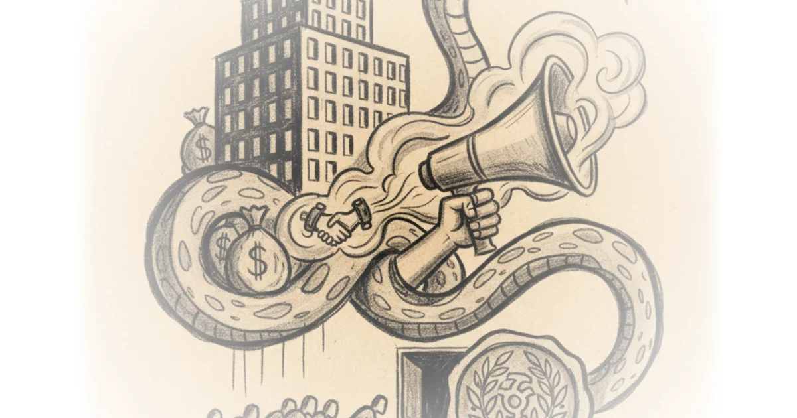

The DEI Industry Has No Standards—And That's Exactly Why It Works for Corporations"
Jennifer Pan argues that the diversity, equity, and inclusion movement has been co-opted by the very institutions it was meant to critique—and the data on what actually works for Black workers tells a surprising story.

The Industry Nobody Regulates
Diversity, equity, and inclusion has existed since the 1960s. But unlike most industries, there's no federal oversight, no standardized guidelines, and literally anyone can claim to be a DEI consultant. Estimates put the industry somewhere between $3 billion and $8 billion annually—and some projections suggest it could reach $15 billion by 2026.
To put that in perspective: the NLRB, the federal agency overseeing workplace law for every American worker, had a budget of just under $300 million last year.
This lack of oversight means corporations have enormous discretion over what counts as anti-discrimination. When federal courts handle discrimination cases, they often look to corporate "best practices" rather than any external standard—giving businesses effective control over defining what equality looks like in their own workplaces.
What Actually Works
Pan makes a counterintuitive argument: universal social democratic programs did more for Black economic advancement than targeted anti-discrimination efforts. During the period known as the Great Compression—from roughly 1940 to 1970—the wage gap between Black and White workers shrank more than at any other time in American history. This occurred largely before the 1964 Civil Rights Act, while Jim Crow was still legally enforced.
The economic floor was rising for everyone. Black people saw tremendous upward mobility during this period—not because of civil rights law, but because universal programs like the New Deal created an expanding economic floor that lifted all boats.
A concrete example: when a friend moved to Europe and encountered what they described as a "grotesque" caricature of a Black person in a local bar, the country still has a national health service. The average life expectancy for a Black person in that unnamed European country is 12 years longer than in the United States.
The material cost of hyperfocus on interpersonal racism rather than redistribution of wealth causes people to die sooner.
This suggests that focusing exclusively on individual discrimination misses the structural barriers that affect entire populations.
The New Deal Wasn't What You Heard
One of Pan's more controversial claims: the New Deal wasn't racist. While it's true that domestic and agricultural workers were excluded from Social Security protections, those workers were predominantly white—75% of agricultural workers under the original legislation were white. If the program was designed to lock Black people out, it did so by excluding a majority-white workforce.
The exclusions came partly from Southern Democrats in the coalition, but equally from business lobbies that thought tracking hours for precarious workers would be too cumbersome. This doesn't fit the narrative that Social Security was designed as a whites-only program—but it's a more complicated story than activists on both sides often tell.
How Corporations Actually Use DEI
McKenzie reports show that between 2020 and 2022, corporations and the financial sector together donated $340 billion to what they called "racial equity programs." Much of this money went to undefined initiatives—affordable housing, small business support for entrepreneurs of color, or untraceable "racial justice" charities.
But here's what's revealing: these corporations have no obligation to implement meaningful structural change. They can simply donate to causes with no public accountability about where funds actually go. The public has no say over how this money is spent.
Pan argues that DEI programs frequently double as union-busting tools. Many employer-side labor law firms now offer a DEI package alongside their union suppression services—and often bundle them at a discount. Companies can claim they're committed to racial justice while simultaneously undermining the one institution that has historically fought for working-class power.
The Political Consequences
Did woke help put Trump in office? Pan argues yes—but perhaps not in the way Democrats expect.
The parties have converged on economics while diverging on culture. Bill Clinton took the Democratic Party economically right: welfare reform, NAFTA, deregulation of banks and telecommunications. This neoliberal project hollowed out manufacturing jobs and outsourced work.
Today, the most salient differences between Republicans and Democrats aren't economic—they're cultural. The Democrats' focus on DEI and identity politics created a vacuum where economic populism once lived. And that space has been filled by Trump-style nationalism.
When you think about how the Democrats differ from the Republicans, it's on issues like abortion, race, immigration, climate—not economics.
This leaves working-class voters without an economic message from either party—and makes them vulnerable to cultural appeals from the right.
Counterarguments
Critics might note that dismissing interpersonal racism understates its real effects. Discrimination in hiring, policing, and healthcare creates tangible harms that material redistribution alone cannot address. And some evidence suggests DEI programs do improve workplace representation for marginalized groups—though whether those gains translate to actual power or just better PR is another question.
Pan acknowledges anti-discrimination law remains necessary—just insufficient on its own.
Bottom Line
The strongest part of this argument is the historical data: universal programs consistently outperformed targeted interventions for Black economic advancement. The vulnerability lies in how easily corporations have co-opted DEI language without meaningful accountability—making the movement itself a tool for maintaining power structures rather than challenging them. The industry's lack of oversight isn't a bug in the system; it's become a feature that corporations have exploited masterfully.